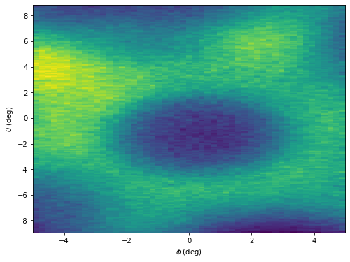
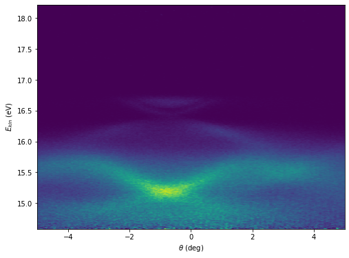

Slicing planes from 3D volume data
We can slice our 3D Fermi map data in order to get a particular plane using plane_slice function. Say, we need a constant energy cut.
import ARPES_Python_tools as arp
[data, energy, angle] = arp.load_ses_spectra('sample_spectra.txt')
# We want the iso-energy surface integrated between the energy values 15.6 and 15.8 eV
iso_energy_surf = arp.plane_slice(data, energy, 15.6, 15.8)
# Plot image
import matplotlib.pyplot as plt
%matplotlib inline
# Above line is specific to Jupyter Notebook
plt.figure(figsize = (8, 6))
plt.imshow(iso_energy_surf, origin = 'lower', aspect = 'auto', \
extent = (theta[0], theta[-1], phi[0], phi[-1]))
plt.xlabel('$\\phi$ (deg)')
plt.ylabel("$\\theta$ (deg)")
plt.show()
This should give you an iso-energy surface like this:

How about if we want the slice along another axis? All we need is transpose the data, and provide the correct axis input.
# We want a cut integrating phi values between (-0.5, 0.5) degrees
phi_slice = arp.plane_slice(data.transpose([2, 0, 1]), phi, -0.5, 0.5)
# Plot image
import matplotlib.pyplot as plt
%matplotlib inline
# Above line is specific to Jupyter Notebook
plt.figure(figsize = (8, 6))
plt.imshow(phi_slice, origin = 'lower', aspect = 'auto', \
extent = (phi[0], phi[-1], energy[0], energy[-1]))
plt.xlabel("$\\theta$ (deg)")
plt.ylabel('$E_{kin}$ (eV)')
plt.show()
